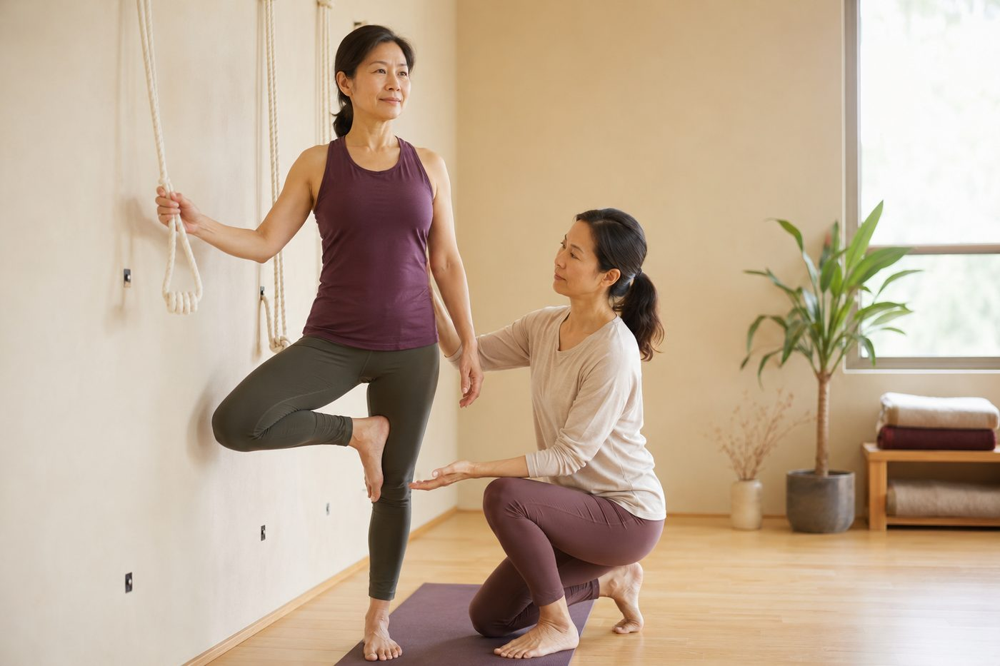

練樹式一抬腳就晃，可以先調哪個條件？
腳跟才離地，腳趾就開始抓墊子。你越想把自己釘在原地，身體越忙著左右調整。下次可以先保留一隻手扶牆，看看少一點猜測、多一個支點，站起來有什麼差別。
瑜伽樹式抬腳後，支撐範圍變小，身體會用視線、足底感受和小幅重心移動保持平衡。可扶牆讓腳尖留地，再試著看向前方固定的一點，一次改一個條件。輕微晃動很常見。若平日走路也常失衡或跌倒，可先尋求專業評估。

扶牆時，怎麼比較不同的平衡條件？
先在穩固的牆邊把重量慢慢移到站立腳，另一腳腳尖留地，手保持能碰得到牆。可以輪流試手扶牆、抬腳幅度變小、視線固定三種條件。若腳趾一直抓墊，可接著看腳掌踩穩和抓趾的差別。
👆 手機版可左右滑動
| 練習條件 | 怎麼比較 | 觀察線索 |
|---|---|---|
| 扶牆 | 先保留手的支撐，腳尖留地。 | 換重心時是否還需要抓緊腳趾。 |
| 縮小抬腳幅度 | 保持支撐，只讓另一腳腳跟稍微離地。 | 晃動幅度怎麼變。 |
| 視線定點 | 在原本舒服的站姿看向前方固定的一點。 | 視線更穩時，自己是否更自在。 |
在課上晃一下，和平日也常失衡有什麼差別？
樹式抬腳後，身體本來就會做小幅調整，可以比較哪個支撐讓自己更自在。若平日走路、轉身或穿褲子也常失衡、反覆絆倒，可以和專業人員討論，也可參考熟齡平衡與防跌的生活安排。
常見問題
單腳站一晃就是腿沒力嗎？
單靠晃動無法判斷腿力。支撐面、視線、疲累和熟悉程度都可能改變練習感受。
樹式是不是一定要把腳抬很高？
不用。腳尖可以留地，也可以扶牆，先選自己能安全進出的位置。
記下你最有感的時刻
先記哪個動作一抬腳最容易晃，以及扶牆或縮小幅度後的感受。
免費約 2 分鐘，免登入、免加 LINE。做完可用 3 天觀察卡整理日常感受。
開始免費體態訊號掃描 →